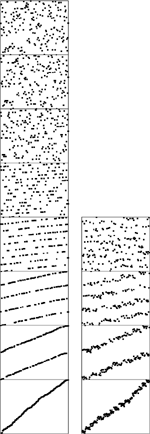

C++ Programming Robert Sedgewick - Princeton University Addison Wesley Professional Algorithms in C++, Parts 1–4: Fundamentals, Data Structure, Sorting, Searching, Third Edition
10.7. Sublinear-Time Sorts
The primary conclusion that we can draw from the analytic results of Section 10.6 is that the running time of radix sorts can be sublinear in the total amount of information in the keys. In this section, we consider practical implications of this fact.
The LSD radix-sort implementation given in Section 10.5 makes bytesword passes through the file. By making R large, we get an efficient sorting method, as long as N is also large and we have space for R counters. As mentioned in the proof of Property 10.5, a reasonable choice is to make lg R (the number of bits per byte) about one-quarter of the word size, so that the radix sort is four key-indexed counting passes. Each byte of each key is examined, but there are only four digits per key. This example corresponds directly to the architectural organization of many computers: one typical organization has 32-bit words, each consisting of four 8-bit bytes. We extract bytes, rather than bits, from words, which approach is likely to be much more efficient on many computers. Now, each key-indexed–counting pass is linear, and, because there are only four of them, the entire sort is linear—certainly the best performance we could hope for in a sort.
In fact, it turns out that we can get by with only two key-indexed counting passes. We do so by taking advantage of the fact that the file will be almost sorted if only the leading w/2 bits of the w-bit keys are used. As we did with quicksort, we can complete the sort efficiently by using insertion sort on the whole file afterward. This method is a trivial modification to Program 10.4. To do a right-to-left sort using the leading one-half of the keys, we simply start the outer for loop at bytesword/2-1, rather than bytesword-1. Then, we use a conventional insertion sort on the nearly ordered file that results. Figures 10.3 and 10.18 provide convincing evidence that a file sorted on its leading bits is well ordered. Insertion sort would use only six exchanges to sort the file in the fourth column of Figure 10.3, and Figure 10.18 shows that a larger file sorted on only the leading one-half of its bits also could be sorted efficiently by insertion sort.
When keys are random bits, sorting the file on the leading bits of the keys brings it nearly into order. This diagram compares a six-pass LSD radix sort (left) on a file of random 6-bit keys with a three-pass LSD radix sort, which can be followed by an insertion-sort pass (right). The latter strategy is nearly twice as fast.

For some file sizes, it might make sense to use the extra space that would otherwise be used for the auxiliary array to try to get by with just one key-indexed–counting pass, doing the rearrangement in place. For example, sorting 1 million random 32-bit keys could be done with one key-indexed–counting sort on the leading 20 bits, then an insertion sort. To do that, we need space just for the (1 million) counters—significantly less than would be needed for an auxiliary array. Using this method is equivalent to using standard MSD radix sort with R = 220, although it is essential that a small radix be used for small files for such a sort (see the discussion after Property 10.4).
The LSD approach to radix sorting is widely used, because it involves extremely simple control structures and its basic operations are suitable for machine-language implementation, which can directly adapt to special-purpose high-performance hardware. In such an environment, it might be fastest to run a full LSD radix sort. If we use pointers, then we need to have space for N links (and R counters) to use LSD radix sort, and this investment yields a method that can sort random files with only three or four passes.
In conventional programming environments, the inner loop of the key-indexed–counting program on which the radix sorts are based contains a substantially higher number of instructions than do the inner loops of quicksort or mergesort. This property of the implementations implies that the sublinear methods that we have been describing may not be as much faster than quicksort (say) as we might expect in many situations.
General-purpose algorithms such as quicksort are more widely used than radix sort, because they adapt to a broader variety of applications. The primary reason for this state of affairs is that the key abstraction on which radix sort is built is less general than the one that we used (with the compare function) in Chapters 6 through 9. For example, one typical way to arrange the interface for a sort utility is to have the client provide the comparison function. This is the interface used by the C++ library qsort. This arrangement not only handles situations where the client can use specialized knowledge about complex keys to implement a fast comparison, but also allows us to sort using an ordering relation that may not involve keys at all. We examine such an algorithm in Chapters 21.
When any of them could be used, the choice among quicksort and the various radix sort algorithms (and related versions of quicksort!) that we have considered in this chapter will depend not only on features of the application (such as key, record, and file size) but also on features of the programming and machine environment that relate to the efficiency of access and use of individual bits and bytes. Tables 10.1 and 10.2 give empirical results in support of the conclusion that the linear- and sublinear-time performance results that we have discussed for various applications of radix sorts make these sorting methods an attractive choice for a variety of suitable applications.
Table 10.1. Empirical study of radix sorts (integer keys)These relative timings for radix sorts on random files of N 32-bit integers (all with a cutoff to insertion sort for N less than 16) indicate that radix sorts can be among the fastest sorts available, used with care. If we use a huge radix for tiny files, we ruin the performance of MSD radix sort, but adapting the radix to be less than the file size cures this problem. The fastest method for integer keys is LSD radix sort on the leading one-half of the bits, which we can speed up further by paying careful attention to the inner loop (see Exercise 10.45). | | | | 4-bit bytes | 8-bit bytes | 16-bit bytes | N | Q | M | L | M | L | L* | M | L | M* | 12500 | 2 | 7 | 11 | 28 | 4 | 2 | 52 | 5 | 8 | 25000 | 5 | 14 | 21 | 29 | 8 | 4 | 54 | 8 | 15 | 50000 | 10 | 49 | 43 | 35 | 18 | 9 | 58 | 15 | 39 | 100000 | 21 | 77 | 92 | 47 | 39 | 18 | 67 | 30 | 77 | 200000 | 49 | 133 | 185 | 72 | 81 | 39 | 296 | 56 | 98 | 400000 | 102 | 278 | 377 | 581 | 169 | 88 | 119398 | 110 | 297 | 800000 | 223 | 919 | 732 | 6064 | 328 | 203 | 1532492 | 219 | 2309 | Key:
Q Quicksort, standard (Program 7.1)
|
M MSD radix sort, standard (Program 10.2) L LSD radix sort (Program 10.4) M* MSD radix sort, radix adapting to file size L* LSD radix sort on MSD bits
|